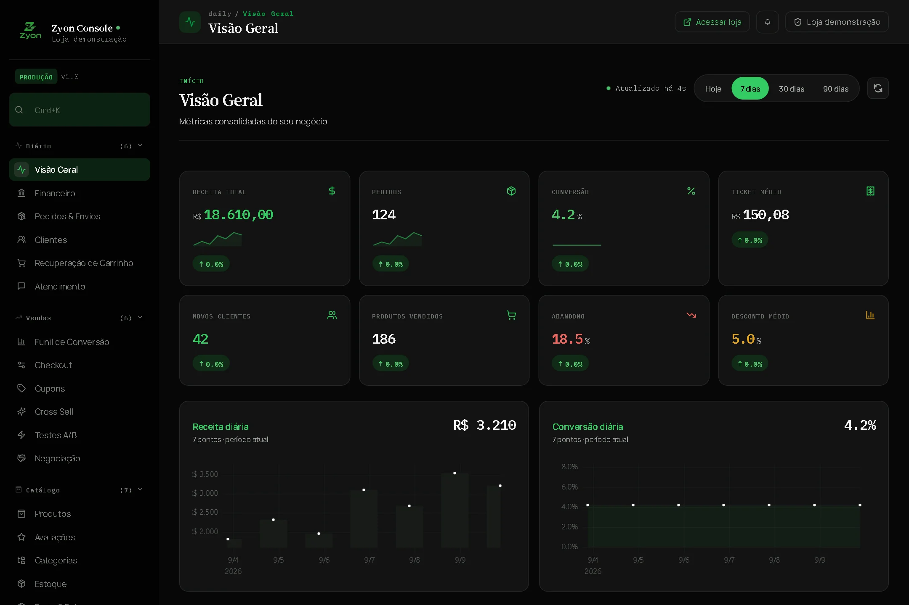
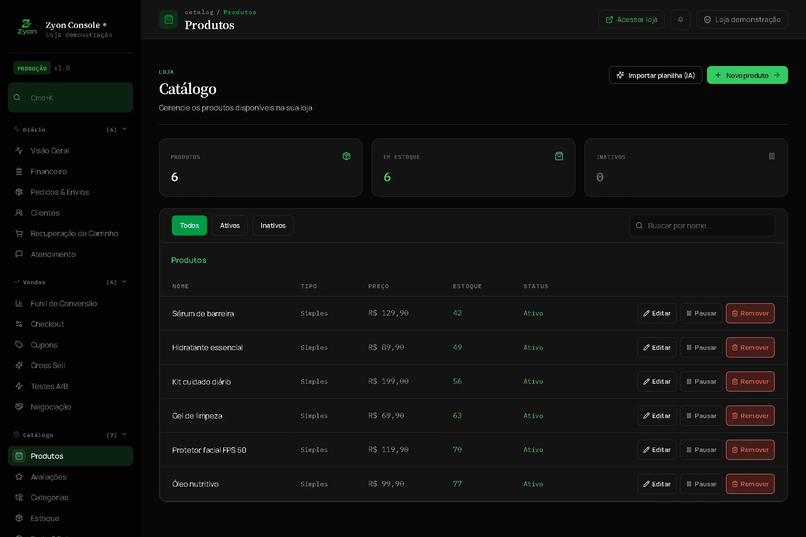
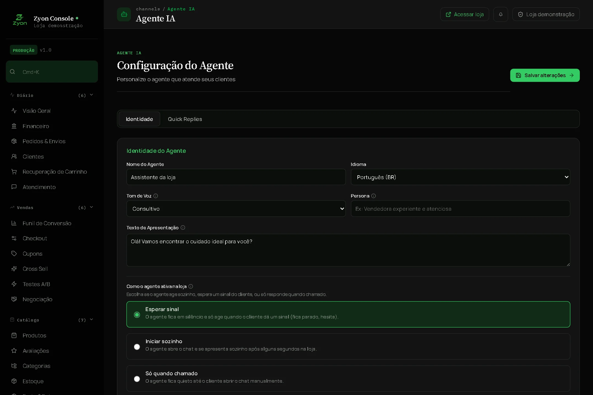

Seu portfólio fica pronto para ser encontrado.
Organize produtos, histórias e disponibilidade em uma vitrine que conversa com o contexto de cada cliente.
Do primeiro “olá” ao próximo pedido. Sua IA atende e conduz a compra. Você cuida da estratégia, com toda a operação à vista.
Você ganhou 14 dias de taxa Zyon grátisPara novas lojas no plano Free. Conheça as condições abaixo.

Aguarde um instante e tente novamente. Você também pode abrir a Athom em outra aba.
Saia da visão de quem compra e entre na de quem decide. Da vitrine à conversa: conheça o catálogo e o agente que dão vida à sua loja.


A autonomia aparece na experiência do cliente.
O controle continua com você.
Da taxa Zyon da loja, para novos cadastros no plano Free. Ative sua operação e deixe a primeira conversa virar uma oportunidade de venda.
Sem mensalidade no Free.
Após 14 dias: R$ 2,99 por transação para a loja. Taxas do provedor de pagamento e do comprador são separadas.
O motor Zyon conecta intenção de compra, catálogo e política comercial. A IA conduz a conversa; os motores de regras validam desconto, margem e frete antes de uma oferta.

O motor identifica uma objeção de preço e considera o produto e o carrinho antes de propor uma condição.
Organize produtos, histórias e disponibilidade em uma vitrine que conversa com o contexto de cada cliente.
A IA apresenta alternativas, responde objeções e mantém a conversa próxima da compra sem perder a voz da sua marca.
Pedidos, clientes, catálogo e regras ficam visíveis em um painel feito para decisões rápidas e responsáveis.
A Zyon transforma sua loja em um verdadeiro agentic shop: nossa infraestrutura organiza catálogo, atendimento conversacional com IA e fechamento de pedido em uma jornada contínua, com total proteção de margem.
Cadastre ou sincronize produtos, preços, estoque e informações que o cliente precisa para decidir.
O agente entende o pedido, encontra opções relevantes e orienta a pessoa até a melhor escolha.
Use o painel para revisar pedidos, ajustar regras e melhorar a operação com base nas conversas reais.
Seu catálogo e seu conhecimento deixam de ser informações soltas. Viram contexto para recomendar, responder e ajudar a comprar.
Espaço, organização e uso diário explicados de acordo com a necessidade do cliente.
O cliente descreve uma necessidade, uma ocasião ou uma preferência. A Zyon usa esse contexto para apresentar produtos e explicar por que fazem sentido.
Características dos produtos, políticas e materiais da empresa dão base às respostas. Sua equipe mantém a informação; a IA ajuda o cliente a entendê-la.
Do primeiro “oi” à escolha do produto, o cliente conversa naturalmente. Chat e voz se conectam ao carrinho para que uma boa conversa tenha um próximo passo.
Conhecer a experiência“Me mostra uma opção que combine comigo.”
Representação da experiência · Voz disponível a partir do GrowthUma operação que cresce precisa entender o que está funcionando. O Revenue Manager organiza a análise comercial; os testes A/B permitem comparar abordagens antes de ampliar uma estratégia.
Observe o contexto. Acompanhe pedidos, conversas e sinais da jornada.
Compare estratégias. Avalie variações com uma referência e critérios definidos.
Revise a decisão. Considere receita e margem antes de buscar mais volume.
Receita com responsabilidade.
A margem também faz parte da decisão.
Recursos do plano Scale. Resultados dependem da operação e das condições de cada experimento.
Protocolos de comércio permitem que agentes descubram produtos, organizem uma compra e respeitem suas autorizações. A Zyon estrutura essas etapas para conectar sua operação a essa nova forma de comprar.
Uma identidade comercial estruturada ajuda outros agentes a encontrar sua loja, entender seu catálogo e conhecer os recursos disponíveis.
UCP / Identidade, catálogo e capacidadesSessões, feed de produtos e webhooks expõem a jornada comercial com estados claros, da descoberta à confirmação do pedido.
ACP / Uma jornada comercial estruturadaOs mandatos de pagamento e checkout mantêm condições e autorizações explícitas quando a compra é iniciada por um agente.
AP2 / Permissão antes da execuçãoSua marca no centro.
Mais caminhos para chegar até ela.
Você decide o que a loja pode oferecer, como ela deve falar e quais limites nunca devem ser ultrapassados. A IA sugere e atende; suas regras aprovam cada condição comercial.
Configurar minha operaçãoExemplo: produto de R$ 100, custo de R$ 60 e margem mínima de 25%. Cálculo ilustrativo, sem frete e taxas.
Da primeira loja à operação em escala. Escolha a capacidade e a inteligência que seu momento pede, com limites e taxas visíveis desde o início.
Para tirar sua loja autônoma do papel e conhecer a Zyon atendendo seus primeiros clientes. O essencial para começar, com a identidade da sua marca.
Após os 14 dias iniciais: R$ 2,99 por transação.
Sua operação começa comPara quem já tem uma rotina de vendas e quer automatizar mais. Amplie o atendimento, dê conhecimento à IA e trabalhe com regras comerciais avançadas.
R$ 1,49 por transação. Assinatura mensal.
Mais inteligência para sua rotinaPara empresas que precisam de capacidade, marca própria e inteligência comercial avançada. Expanda a operação com análise, experimentação e agentes.
R$ 0,99 por transação. Assinatura mensal.
Capacidade para o próximo nívelHá uma taxa de serviço de R$ 0,99 por compra para o comprador. Taxas dos provedores de pagamento são cobradas separadamente. Confira valores e condições no fluxo de assinatura.
Entenda o que muda na operação quando sua loja passa a trabalhar com a Zyon.
Conversar com a equipeE-commerce agêntico é a evolução do comércio digital onde agentes inteligentes de IA têm autonomia para entender intenções de compra, recomendar produtos com contexto, tirar dúvidas em tempo real, aplicar ofertas e conduzir o checkout completo de forma conversacional e segura. O Agentic Shop é a vitrine inteligente que responde dinamicamente a cada comprador, mantendo sempre a política de margem e regras do lojista no comando.
O plano escolhido acompanha você até o painel. Crie seu acesso ou entre na sua conta, confira as condições e confirme a assinatura no Stripe. Depois, você volta ao dashboard com a sessão preservada. O plano pago é ativado após a confirmação do pagamento. Se você já tem uma assinatura, a alteração é feita no portal de cobrança.
A Zyon reúne catálogo, atendimento por IA, recomendações e a jornada de compra. O cliente pode avançar sem esperar uma resposta manual a cada etapa. Sua empresa continua definindo produtos, políticas e condições comerciais.
As ofertas seguem as regras configuradas pela loja. Limites de desconto e margem são validados pelos motores comerciais. Uma sugestão da IA precisa respeitar esses limites antes de ser apresentada como condição de compra.
Você gerencia catálogo, identidade, atendimento e regras pelo dashboard. Recursos de API e protocolos ficam disponíveis para operações que precisam de uma implementação técnica mais personalizada.
O Free permite começar com até 100 pedidos e 100 conversas com IA por mês. O Growth amplia a capacidade e libera voz, conhecimento e regras avançadas. O Scale adiciona domínio próprio, experimentação, Revenue Manager e mais capacidade de operação.
A taxa Zyon da loja é de R$ 2,99 por transação no Free, R$ 1,49 no Growth e R$ 0,99 no Scale. O comprador paga R$ 0,99 de serviço por compra. As taxas do provedor de pagamento são separadas. No Free, os primeiros 14 dias não têm a taxa de transação Zyon da loja.
Sim. Nome, tema e identidade do atendimento podem ser personalizados. Growth e Scale permitem remover o selo Zyon. O Scale também inclui domínio próprio.
Conheça a Zyon com 14 dias sem taxa de transação para sua loja no Free.
Acredita em um comércio mais autônomo? Vamos conversar sobre a visão, o produto e os próximos passos da Zyon.
Quero investir na Zyon Conversa direta pelo WhatsApp